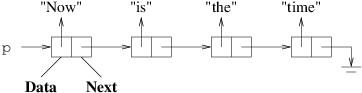
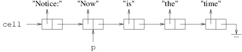
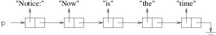
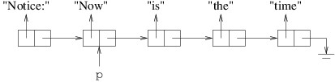
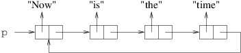

Introduction to Linked Lists
To build a linked list, we first need to define a simple class, which we will call LinkedListCell<T>. Instances of this class will be the individual building blocks that we will chain together to form linked lists. T will be the type of the data item we will store in each cell - i.e., the type of the data items that we will store in the linked list.
A LinkedListCell<T> will contain two public properties, which can each be implemented using the default implementation:
- The Data property gets or sets the data item (of type T) stored in the cell.
- The Next property gets or sets the next LinkedListCell<T>? in the linked list. If there is no next cell, it gets null.
Because this is a class, it is a reference type; hence, the Next property will store a reference to another LinkedListCell<T>.
The only other member of this class is a public constructor. Because we don’t want to make Data nullable unless the user code specifies a nullable type for T, we need to make sure it is initialized to an appropriate value. For this purpose, we use a public constructor that takes the following parameters:
- The initial Data value (of type T).
- The next cell in the list (of type LinkedListCell<T>?).
It simply sets the values of the two properties to the given parameters.
Although the LinkedListCell<T> class is simple, we can use its Next property to chain together long sequences of its instances:

In the above figure, p is a LinkedListCell<string> variable.
Each box in the figure represents an instance of
LinkedListCell<string>. The boxes are each divided into two
regions to indicate the two public properties for each cell. Because
string is a reference type, we have shown each Data property as
a reference to a string. The rightmost arrow that is bent downward
is used to represent null. The entire sequence of
LinkedListCell<string>s is called a linked list. Given this
linked list:
p.Datais “Now”;p.Next.Datais “is”;p.Next.Next.Datais “the”;p.Next.Next.Next.Datais “time”; andp.Next.Next.Next.Nextis null (if we try to get its Data property, we will get a NullReferenceException).
When writing code for using and manipulating linked lists, it is helpful to draw pictures of the lists, as we do throughout this chapter.
Suppose we want to insert the string “Notice:” at the beginning of this linked list. We use the LinkedListCell<T> constructor to initialize a new cell:
LinkedListCell<string> cell = new("Notice", p);
This yields the following:

This is what we want, unless we want p to refer to the beginning of
the linked list. We can take care of this by copying the value of cell
to p:
p = cell;
This yields the following (we are not showing cell because we are no
longer interested in it, but it still refers to the same cell):

We can also undo the above statement by copying into p the reference
in the Next property of the cell to which p refers:
p = p.Next;
(If this statement occurs in a context in which the compiler cannot determine that p is not null, an ! will need to be inserted prior to .Next.) This yields the following:

This has the effect of removing “Notice:” from the linked list to which
p refers. Though we haven’t shown it, cell still refers to the cell
containing “Notice:”; hence, we still have access to the linked list
beginning with this cell. However, if the program had no references
remaining to this cell, we would have no way to retrieve it, and it
would be available for garbage collection. This illustrates how we must
take care not to lose a part of a linked list (unless we are finished
with it) when we are manipulating it.
With a little more work, cells can be inserted into or removed from arbitrary locations in a linked list. We will discuss how to do this in subsequent sections. For now let us simply observe that linked lists do not always continue until they reach a null - they can contain cycles, as follows:

This is occasionally what we want, but more often, this is a programming error that leads to an infinite loop.